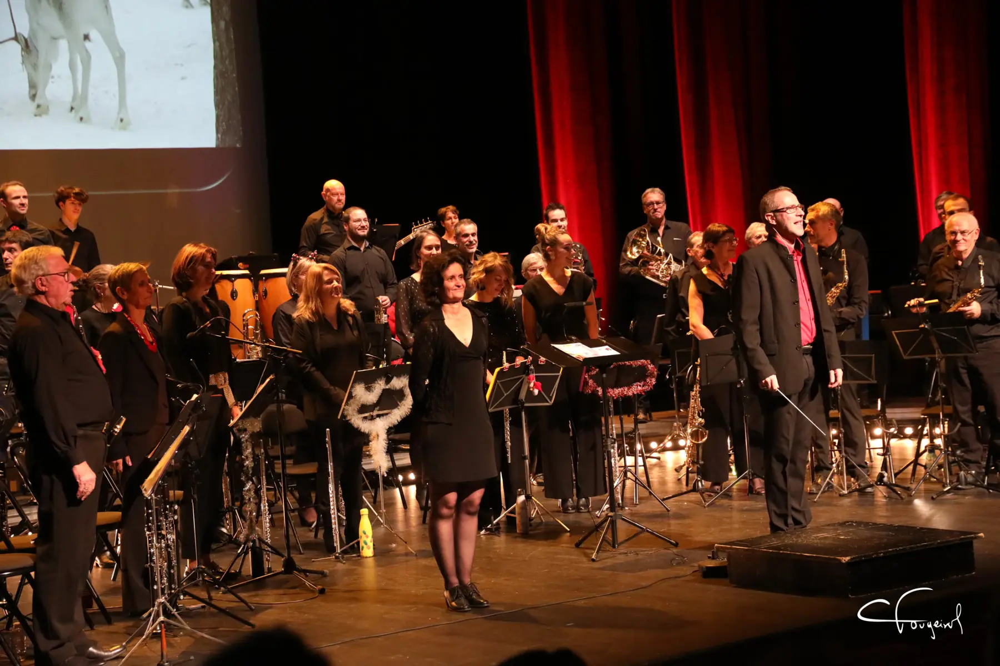

Un orchestre d'harmonie né à Montélimar en 1986
Mistral à la Clé est un orchestre composé d'instruments à vent (bois et cuivres), de percussions, de guitare basse et de synthétiseur. Ses musiciens, pour la plupart amateurs, viennent de Montélimar et de la moyenne vallée du Rhône.
L'association, régie par la loi de 1901, est affiliée dès sa création à la Fédération Musicale de la Drôme, et par elle à la Fédération Musicale Rhône-Alpes et à la Confédération Musicale de France.
« Musiques de qualité et éclectiques, mise en valeur de solistes, sérieux, humour et convivialité. »

Quarante ans de musique
- 1986
Naissance de l'orchestre à Montélimar, sous la direction d'Hervé Argentin, son fondateur, qui le dirige pendant 30 ans. - 1991 · 1996 · vers 2000
Une cassette, puis deux CD enregistrés. La bibliothèque musicale dépasse aujourd'hui les 600 morceaux. - 2010
Claudette Rebout devient présidente, après André Combel (1986-2007) et Jacques Chavanne (2007-2010). - 2016
La direction est confiée à Christophe Mégueulle, saxophoniste, rejoint ensuite par Muriel Vayer, clarinettiste. - Mai 2025
43 musiciens sur scène, un Théâtre de Montélimar complet : il faut refuser des spectateurs. - 16 mai 2026
Concert des 40 ans au Palais des Congrès de Montélimar : « un véritable tournant dans l'histoire de l'orchestre ». - Septembre 2026
Un nouveau logo pour une nouvelle signature.
Ce qui nous fait vibrer
Mistral, à la clé
Le mistral est ce vent du Rhône qui balaie la vallée et chasse les nuages ; les instruments à vent de l'orchestre en sont l'écho. La clé, c'est la clé de sol qui ouvre la portée, et aussi celle de la convivialité : un orchestre où l'on joue, on rit et on partage.
Explication officielle du nom : à confirmer par l'association.